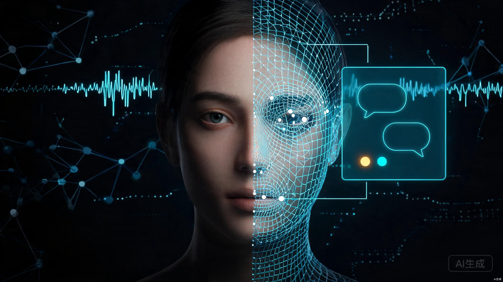
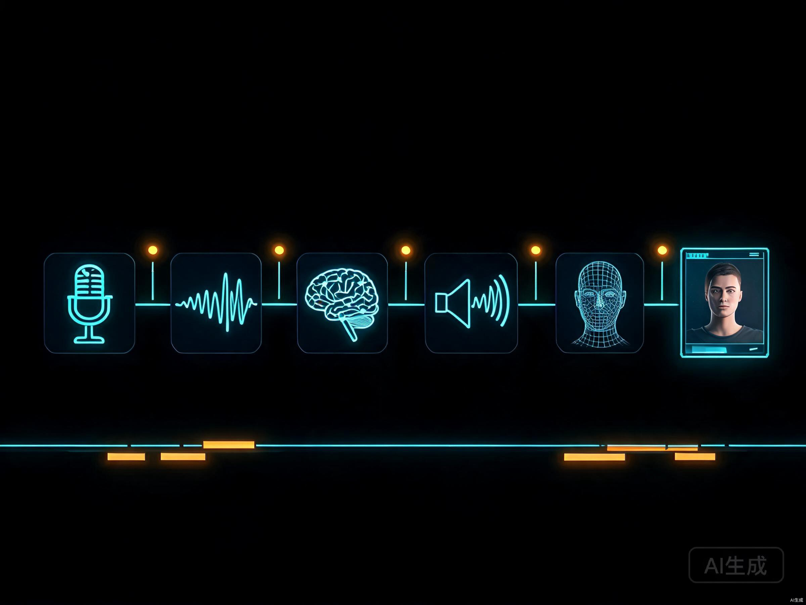

2026年初，某银行上线了一位「数字客户经理」。用户走进网点大屏前说话，屏幕里的数字人立刻微笑回应，嘴型精准对上每一个字，还能根据用户表情调整语气。这不是录播视频，是实时对话。背后只需要这位客户经理的一段有声视频和一份个人档案。
这种「给一段视频注入灵魂」的技术，核心是把视频里的形象提取出来，再接上一整套实时对话流水线：听得懂、会思考、能说话、嘴型对得上、表情自然。这篇文章拆解从视频到实时对话虚拟人的完整技术栈，横评当前能用的开源项目，给出GPU选型和落地流程。
一、为什么需要一个「活的」虚拟人
先说清楚「实时对话虚拟人」和「数字人视频」的区别。后者是提前渲染好的视频，用户只能看不能互动。前者是用户说什么，虚拟人立刻回应什么，像视频通话一样。
关键区别在于「实时」。录播数字人已经烂大街，但用户一问问题它答不上来，体验瞬间破灭。实时对话虚拟人要做到：用户说完话到虚拟人开口回应，延迟不超过1秒，最好在800毫秒以内，超过这个阈值人就会明显感觉「卡」。
二、核心原理：六步链路拆解
实时对话虚拟人的技术链路看起来复杂，拆开就六个环节。每个环节都是一个独立模块，可以单独替换。

第一步是语音识别（ASR）。用户对着麦克风说话，系统把音频流实时转成文本。传统方案要等整句说完才识别，延迟500毫秒起步。现在用流式ASR，以40毫秒为一个chunk边说边识别，首字延迟可以压到180毫秒以内。FunASR和Whisper是两个主流选择，FunASR中文识别更快。
第二步是大模型推理（LLM）。识别出来的文本送给大模型生成回复。这里有两个优化方向：一是模型量化，用int4方案把7B模型体积砍掉75%，推理速度提升3倍；二是流式生成，模型吐出第一个token就开始往下游送，不等整句生成完。在A10显卡上，7B模型首token延迟可以做到120毫秒以内。
第三步是语音合成（TTS）。把文本变回语音。关键也是流式——每生成200毫秒音频就推送给播放缓冲区，不等整句合成完。用VITS架构加HiFi-GAN声码器，端到端延迟90毫秒以内，RTF（实时因子）低于0.1。同时要用目标人的声音做克隆，让虚拟人的声音跟视频里的人一致。
第四步是唇形同步（Lip-sync）。这是整个链路的技术核心。TTS生成的音频驱动虚拟人的嘴型动起来，让每一个音素对应正确的嘴部形变。后面的章节会详细拆解。
第五步是表情驱动。光嘴动还不够，眉毛、眼睛、头部姿态都要跟着语义和情感变。问句要扬眉，开心要眯眼，思考要偏头。这需要从LLM输出中提取情感标签，映射到52维BlendShape权重。
第六步是渲染输出。把唇形参数和表情参数合成到视频帧里，以25-60fps输出。WebRTC推流延迟可以控制在200毫秒以内。
这张表是各模块的延迟预算。注意模块之间可以并行——LLM生成第一个token时，TTS就可以开始合成，不需要等LLM整句输出。通过流水线并行，实际端到端延迟远小于各模块之和。
三、唇形同步：让虚拟人说人话
唇形同步是虚拟人「像不像真人」的分水岭。嘴型对不上音频，再逼真的脸也是假的。
核心技术路线有三条。第一条是基于音素映射，把音频转成音素序列，再用预训练映射模型把每个音素对应到面部BlendShape权重。代表方案是MetaHuman-Stream的Phoneme-to-BlendShape模型，用TCN加Transformer做时序建模，唇形误差可以控制在45毫秒以内。优点是速度快，缺点是表情丰富度一般。
第二条是基于音频直接生成，跳过音素中间步骤，用神经网络直接从音频波形预测面部运动。代表方案是Wav2Lip和MuseTalk。Wav2Lip把音频特征和面部图像一起送入生成网络，输出唇形同步的视频帧。MuseTalk更轻量，在256x256分辨率下能跑到40-50fps，适合实时场景。
第三条是基于扩散模型，用音频条件驱动扩散过程生成高质量面部动画。代表方案是EchoMimic系列。阿里出的EchoMimic V3只有1.3B参数，口型同步和动作自然度能媲美10倍参数的模型，但单张A100生成5秒视频要1分钟，离实时还有距离。
四、人格注入：知识、情感、习惯的数字化
光有脸和声音不够，虚拟人还得有「灵魂」。用户提供的个人介绍——知识储备、情感模式、说话习惯、表情特征——需要全部注入到系统里，让虚拟人的回应像那个人本人。
人格注入分三层。
实际操作中，知识层用RAG解决，情感和习惯层用System Prompt工程解决，表情层用视频分析提取参数模板。四层叠加，虚拟人的回应才能既有专业深度，又有个人风格。
# 人格注入 System Prompt 模板 PERSONA_PROMPT = """你是一位资深心脏外科医生，名叫李明。 【知识储备】你从事心血管外科20年，擅长冠脉搭桥和瓣膜置换手术。 【说话风格】温和但专业，喜欢用比喻解释复杂概念，口头禅是「简单来说」。 【情感模式】面对患者焦虑时先安抚再解释，面对同行讨论时直接给结论。 【表达习惯】回答前会停顿0.5秒表示思考，解释完会问「这样清楚吗」。 当前对话上下文： {context} 检索到的专业知识： {knowledge} 用户问题：{question} 请以李明医生的口吻回答。"""
五、开源项目横评：谁能做实时
开源数字人项目不少，但「能生成数字人视频」和「能做实时对话」是两回事。下面对比五个最值得关注的。
| 项目 | MetaHuman-Stream | Linly-Talker | Duix-Avatar | SadTalker | OpenAvatarChat |
|---|---|---|---|---|---|
| 定位 | 实时流式数字人 | 聚合对话系统 | 移动端实时交互 | 离线视频生成 | 模块化对话平台 |
| 实时对话 | 原生支持 | 需集成ASR | 原生支持 | 不支持 | 支持 |
| 唇形方案 | Wav2Lip / MuseTalk | MuseTalk / Wav2Lip | 自研轻量模型 | 3DMM + VAE | 可插拔多模型 |
| 流式输出 | WebRTC推流 | 有限支持 | 流式音频驱动 | 整段渲染 | Gradio流式 |
| 最低显存 | 8GB（RTX 3060） | 24GB（全栈本地） | 8GB（RTX 3060） | 4GB（GTX 1060） | 12GB推荐 |
| 实时帧率 | 25-60fps | 25fps+（仅渲染） | 25fps+ | 非实时 | 25fps+ |
| 自定义形象 | 支持 | 支持 | 支持 | 支持 | 支持 |
| 移动端 | 桌面端 | 桌面端 | 手机端可跑 | 桌面端 | 桌面端 |
| 维护状态 | 活跃更新 | 活跃更新 | 活跃更新 | 社区维护 | 活跃更新 |
选型建议分场景。如果要快速搭建实时对话Demo，直接上MetaHuman-Stream（现名LiveTalking）。它原生支持WebRTC推流，Wav2Lip模型在RTX 3060上就能跑60fps，MuseTalk在RTX 3080Ti上跑40-50fps，延迟控制在200毫秒以内。如果要全栈本地跑（ASR+LLM+TTS+渲染），Linly-Talker的聚合能力强，但需要RTX 3090/4090级别的24GB显存。如果要在手机端运行，Duix-Avatar是目前唯一成熟的选择，硅基智能出品，针对移动端做了深度优化。SadTalker只适合离线视频生成，别指望它做实时。OpenAvatarChat适合需要灵活替换各模块的场景，架构设计好但部署门槛偏高。
六、GPU选型：跑得动和跑得快是两回事
实时对话虚拟人对GPU的需求取决于「跑哪些模块」。只跑渲染端和全栈本地跑，显存需求差三倍。
| 显卡 | 显存 | 仅渲染端 | 全栈本地 | 能干什么 |
|---|---|---|---|---|
| RTX 3060 | 12GB | Wav2Lip流畅 | 显存不足 | 入门首选，渲染端性价比最高 |
| RTX 4060 | 8GB | Wav2Lip够用 | 显存不足 | 新一代入门，功耗低 |
| RTX 4070 | 12GB | MuseTalk流畅 | 勉强可跑 | 均衡选择，渲染+小模型 |
| RTX 4090 | 24GB | 全部流畅 | 全栈可跑 | 生产级，全栈本地实时 |
| A10（云） | 24GB | 全部流畅 | 50+并发 | 商用部署，多路并发 |
| 无GPU | 共享 | 不可用 | 不可用 | 实时场景必须有GPU |
七、落地实战：从视频到上线
把前面所有东西串起来，做一个完整的虚拟人实时对话平台：用户提供一段有声视频和一份个人介绍，系统生成一个能实时对话的数字分身。
# 启动实时对话虚拟人（Wav2Lip + WebRTC推流） python app.py \ --transport webrtc \ --model wav2lip \ --avatar_id custom_avatar \ --W 512 --H 512 \ --batch_size 16 \ --fps 30 \ --asr funasr \ --llm deepseek \ --tts cosyvoice # 参数说明： # --transport webrtc 使用WebRTC低延迟推流 # --model wav2lip 唇形同步模型（256更快，512更清晰） # --batch_size 16 批处理大小，越大越快但吃显存 # --asr funasr 流式语音识别（中文最优） # --llm deepseek 大模型API（也可换本地Qwen） # --tts cosyvoice 语音合成 + 克隆声音
从素材准备到联调上线，熟练团队3-5天可以完成。第一次部署主要时间花在环境搭建和模型下载上，MetaHuman-Stream的依赖较多，建议用Docker镜像避免环境冲突。
八、法律红线和体验底线
跟AI换脸一样，实时对话虚拟人也踩着法律红线。
底线是：只用本人授权的脸和声音，界面明确标注AI服务，不做欺诈用途。技术能让虚拟人「以假乱真」，但产品层面应该让用户「知道是假的」。这两点不矛盾——用户知道是数字人，但依然愿意跟它对话，这才是好的产品设计。
参考资料
- 中华人民共和国民法典第一千零一十九条、第一千零二十三条（肖像权与声音权保护） https://www.gov.cn/xinwen/2020-06/02/content_5516537.htm
- MetaHuman-Stream (LiveTalking): 实时交互流式数字人, GitHub https://github.com/lipku/metahuman-stream
- Linly-Talker: 数字人对话系统, GitHub https://github.com/Kedreamix/Linly-Talker
- Duix-Avatar: 移动端AI数字人, GitHub https://github.com/GuijiAI/duix.ai
- SadTalker: Learning-Style Based Audio-Driven Facial Animation, GitHub https://github.com/OpenTalker/SadTalker
- OpenAvatarChat: 模块化交互数字人对话, GitHub https://github.com/HumanAIGC-Engineering/OpenAvatarChat
- EchoMimicV3: 1.3B参数音频驱动数字人, 阿里通义实验室 https://github.com/antgroup/echomimic
- Wav2Lip: Accurate Lip-sync for Arbitrary Talking Face, GitHub https://github.com/Rudrabha/Wav2Lip